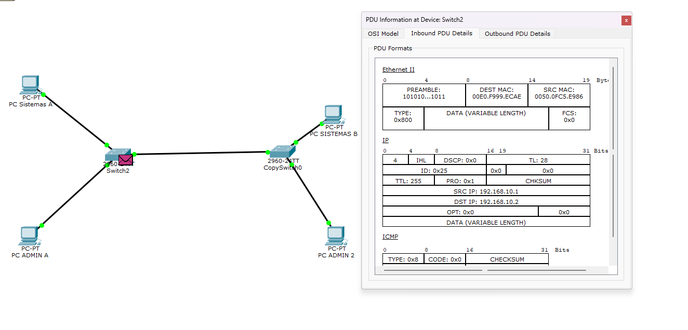
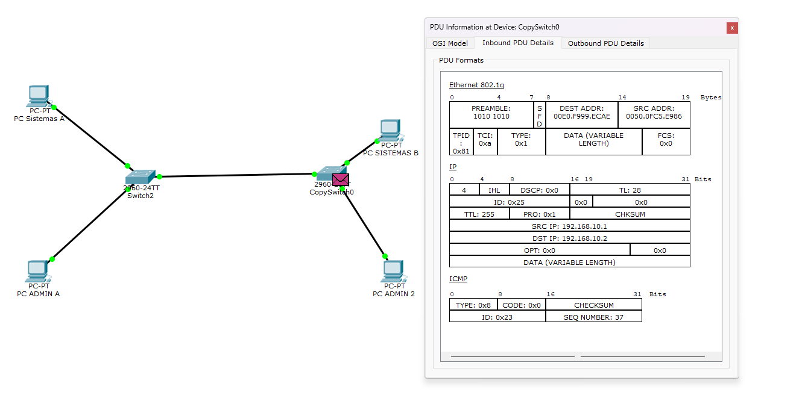
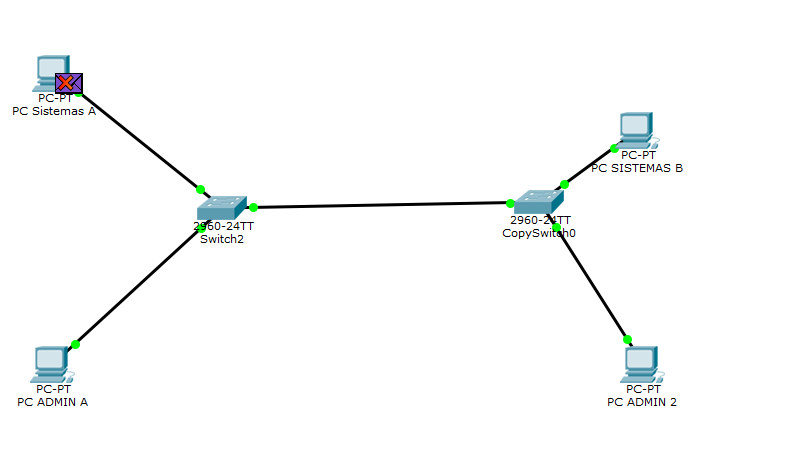

Cisco Packet Tracer
De la Red Plana a la Segmentación y Alta Disponibilidad
El Problema: La Red Plana
Una empresa con 500 computadoras en la misma red física y lógica genera dos problemas críticos.
Dos Fallas Críticas de una Red No Segmentada
1. El Ruido (Broadcasts Incontrolados)
Mensajes dirigidos a todos los equipos a la vez. El switch no los puede filtrar y los copia a todos sus puertos. Las 500 computadoras procesan paquetes irrelevantes: desperdicio de ancho de banda y CPU.
2. La Seguridad (Sin Aislamiento)
Cualquiera enchufa una notebook en la toma de la sala de visitas y queda en la misma red que el servidor de Recursos Humanos, sin ningún filtro intermedio.
VLAN: De la Red Plana a la Segmentación
Un dominio de difusión independiente creado por software dentro de un switch físico.
Concepto y 4 Beneficios Directos
El Switch y el Dominio de Difusión
El switch reenvía por dirección MAC; pero ante un broadcast lo copia por todos los puertos. Por defecto, un switch entero es un solo dominio de difusión.
Partición Lógica: Dos Switches en Uno
Puertos 1 al 12 en VLAN 10; puertos 13 al 24 en VLAN 20. Físicamente comparten el equipo; lógicamente están en mundos aislados.
Verificación de Aislamiento y Herramienta Inspect
Comprobación con comando show vlan brief, prueba de ping y la lupa de inspección.
Evidencias en Cisco Packet Tracer
Comando show vlan brief
Muestra la tabla del switch: VLAN 10 (puertos 1-12) y VLAN 20 (puertos 13-24) formalmente asignados.
La Prueba del Ping
• Misma VLAN: Responde de inmediato.
• Entre VLAN 10 y VLAN 20: A 30 cm en el mismo switch: No responde. El aislamiento es total.
Herramienta Destacada: Inspect Tool (Lupa)
Abre las tablas internas de cualquier equipo (MAC, VLANs) en vivo sin escribir comandos. Ahorra tiempo crítico de diagnóstico.
Salida de Comandos en el Switch
Switch# show vlan brief VLAN Name Status Ports ---- -------- -------- ------------------------- 1 default active Fa0/5 - Fa0/24 10 VLAN0010 active Fa0/1, Fa0/2 20 VLAN0020 active Fa0/3, Fa0/4 PC-A# ping 192.168.10.2 (Misma VLAN) Reply from 192.168.10.2: bytes=32 time<1ms TTL=128 PC-A# ping 192.168.20.1 (VLAN 20) Request timed out. Request timed out. [Aislamiento de Capa 2 Comprobado]
Enlaces Troncales: Conectando Múltiples Switches
Una universidad con dos edificios y tres carreras: Sistemas, Diseño y Administración.
La Imposibilidad del Cableado Dedicado
El Problema: 1 Cable por Cada VLAN
Con 3 VLANs harían falta 3 cables entre edificios. Con 50 VLANs serían 50 bocas de switch y 50 cables subterráneos. Es inviable física y económicamente.
Puerto Access
Pertenece a 1 sola VLAN (PCs). Las tramas viajan limpias, sin etiqueta.
Puerto Trunk
Enlace entre switches. Multiplexa todas las VLANs en 1 cable físico.
Switch(config-if)# switchport mode access (VLAN individual)
Configuración en Packet Tracer: Modo de Puerto
Trunk vs Access
La Etiqueta 802.1Q: Antes vs. Después en Packet Tracer
Inserción de 4 Bytes (TPID + TCI) y disección matemática del valor hexadecimal en el cable troncal.
Evidencia en Packet Tracer: Puerto Access vs. Trunk

La PC transmite tramas normales. No existe etiqueta alguna; la placa de red final es agnóstica a las VLANs.

El switch inyecta la cabecera 802.1Q con TPID: 0x81 y TCI: 0xa antes de enviarlo por el troncal.
Disección de los 4 Bytes: ¿Qué significan TPID y TCI?
TPID (16 bits / 2 Bytes)
Valor fijo 0x8100 (PT muestra 0x81). Avisa al receptor que lo que sigue es una etiqueta de VLAN.
TCI (16 bits / 2 Bytes)
Tag Control Information: Agrupa PCP (3b), DEI (1b) y VID (12b) en un solo campo numérico.
• DEI (1 bit): 0 (No elegible para descarte)
• VID (12 bits): 0000 0000 1010 (Número 10 en binario)
➔ En Packet Tracer figura abreviado como: TCI: 0xa
10101011) al final del preámbulo de Capa 1/2. Indica el fin de sincronismo e inicio de la MAC destino. No es parte del tag.
Ciclo Simétrico, Des-etiquetado y Prueba de Aislamiento
Transparencia hacia los hosts finales, fallo de ping inter-VLAN y la necesidad ineludible de Capa 3.
Ciclo Simétrico y Transparencia Operativa
1. Des-etiquetado en el Puerto de Acceso
Al llegar al destino, el switch receptor retira la etiqueta 802.1Q antes de entregar la trama. La placa de red de la PC recibe una trama Ethernet limpia normal.
2. Ciclo Espejo (ICMP Echo Reply)
La PC responde sin etiqueta. El switch receptor le inyecta la etiqueta con el VID 10 para cruzar el trunk de regreso, y el switch emisor se la retira antes de entregársela al origen.
Principio Clave: Hosts Agnósticos a VLANs
Las computadoras finales jamás se enteran de las VLANs ni de las etiquetas 802.1Q. Es un mecanismo transparente administrado 100% por los switches.
Las VLANs aíslan tanto que ahora Sistemas y Administración no se pueden comunicar. Para conectarlas de forma controlada, conectamos este mismo enlace troncal a un router.
Prueba de Aislamiento Inter-VLAN
Ping Descartado ❌
• Detecta que está en otra subred IP y busca un Default Gateway.
• Al no existir un Router, la pila TCP/IP aborta de inmediato el envío.
➔ Límite de Capa 2 comprobado: El switch conmuta MACs, no enruta IPs.
El Salto a Capa 3: Que se Hablen
Las VLANs aíslan tanto que ahora Contabilidad no puede comunicarse con el servidor de archivos.
¿Por qué el Switch No Puede Hacerlo Solo?
El Límite de Capa 2
El switch trabaja con direcciones MAC; no sabe leer ni modificar direcciones IP. Lo único que sabe es que VLAN 10 y VLAN 20 no se tocan.
La Decisión de la Computadora
Compara su IP con la máscara. Al ver que el destino está en otra red, no pregunta por la MAC destino: entrega el paquete al Default Gateway (el Router).
La Solución Tradicional No Escala
Tirar un cable físico por cada VLAN hacia el router exigiría routers con 15 interfaces físicas, los cuales no existen.
Comparativa de Arquitectura
1 cable físico y 1 interfaz de router por cada VLAN. Desperdicio total de hardware.
1 solo cable troncal hacia el router. La interfaz física se subdivide lógicamente por software.
Router-on-a-Stick y Servicio DHCP
Una sola interfaz física dividida en subinterfaces lógicas, con entrega automática de IPs.
Principio Operativo de ROAS
Subinterfaces Virtuales
La interfaz GigabitEthernet0/0 se divide en .10 y .20. Con un solo cable el router tiene un pie en cada VLAN.
Comando encapsulation dot1Q
Le indica a la subinterfaz de qué VLAN se hace cargo y le asigna su propia dirección IP (Default Gateway).
Servicio DHCP Integrado
El router entrega automáticamente IP, máscara y Gateway a las máquinas al encenderse, sin configuración manual.
Configuración Formal en Cisco IOS
Router(config)# interface GigabitEthernet0/0.10 Router(config-subif)# encapsulation dot1Q 10 Router(config-subif)# ip address 192.168.10.1 255.255.255.0 Router(config)# interface GigabitEthernet0/0.20 Router(config-subif)# encapsulation dot1Q 20 Router(config-subif)# ip address 192.168.20.1 255.255.255.0 ! DHCP POOLS: Router(config)# ip dhcp pool POOL_VLAN10 Router(dhcp-config)# network 192.168.10.0 255.255.255.0 Router(dhcp-config)# default-router 192.168.10.1
Ciclo del Paquete ROAS y la Herramienta PT
El ping que antes no funcionaba ahora responde, y particularidades investigadas de Packet Tracer.
La Debilidad Fatal: La Redundancia
Todo depende de un solo cable: si se corta o el switch se quema, la empresa deja de operar.
El Dilema de la Redundancia Física
La Solución Aparente
Poner cables de más: conectar switches en triángulo para que si se cae un camino, quede el otro de respaldo.
La Paradoja Mortal
La redundancia, hecha sin un protocolo de control, destruye la red por completo en cuestión de segundos.
Sin redundancia, un cable cortado detiene la empresa. Con redundancia, la red se destruye a sí misma.
¿Por Qué la Trama Ethernet No Muere Sola?
El paquete IP tiene TTL (Time to Live); la trama Ethernet carece por completo de ese campo.
Las 3 Consecuencias de la Falta de TTL
1. Tormenta de Broadcast
Un broadcast entra en el círculo y gira para siempre a la velocidad del cable, multiplicándose en cada vuelta.
2. Tramas Duplicadas
Las computadoras reciben copias idénticas del mismo mensaje una y otra vez.
3. MAC Flapping (Aleteo de Tablas)
Los switches ven la misma MAC entrando por puertos distintos y reescriben su tabla sin parar. La red no se degrada: se cae por completo.
Spanning Tree Protocol (STP)
Los switches calculan un árbol sin círculos y bloquean lógicamente los enlaces que sobran.
Mecanismo Operativo de STP
1. Elección del Root Bridge (Central)
Por votación: cada switch tiene un ID (Prioridad + MAC). Gana el más bajo como switch de referencia.
2. Puertos Bloqueados (Luz Ámbar)
Cada switch calcula su camino más corto hacia la raíz. Los puertos sobrantes se bloquean (luz ámbar): el cable sigue enchufado, pero no pasa tráfico.
Cisco PVST+ (Per-VLAN Spanning Tree)
Corre un árbol por cada VLAN: switch 1 es central para VLAN 10 y switch 2 para VLAN 20. Aprovecha ambos cables en lugar de desperdiciar uno.
Comandos y Estados de Puerto
Switch# show spanning-tree
VLAN0010
Spanning tree enabled protocol ieee
Root ID Priority 4096
Address 000A.4111.0001
This bridge is the root
Interface Role Sts Cost Type
--------- ---- --- ----- ----
Fa0/1 Desg FWD 19 P2p (Verde)
Fa0/2 Altn BLK 19 P2p [Ámbar - Bloqueado]
! SI EL ENLACE PRINCIPAL CAE:
! Fa0/2 pasa automáticamente a FWD (Verde).
Demostración: Corte en Vivo con la Tijera
Topología en triángulo con ping continuo: cortamos el cable principal y la red se arregla sola.
Síntesis de la Arquitectura Integrada
Todo verificado y simulado en Cisco Packet Tracer por el Grupo Verde.
Eliminan el ruido y aíslan la seguridad dividiendo el dominio de difusión dentro del mismo switch.
Transportan decenas de VLANs por 1 solo cable físico usando la etiqueta de 4 Bytes.
Permiten que las VLANs se hablen de forma controlada mediante subinterfaces y asignación de IP automática.
Permite cables redundantes bloqueando bucles en ámbar y recuperando fallas en vivo sin intervención humana.